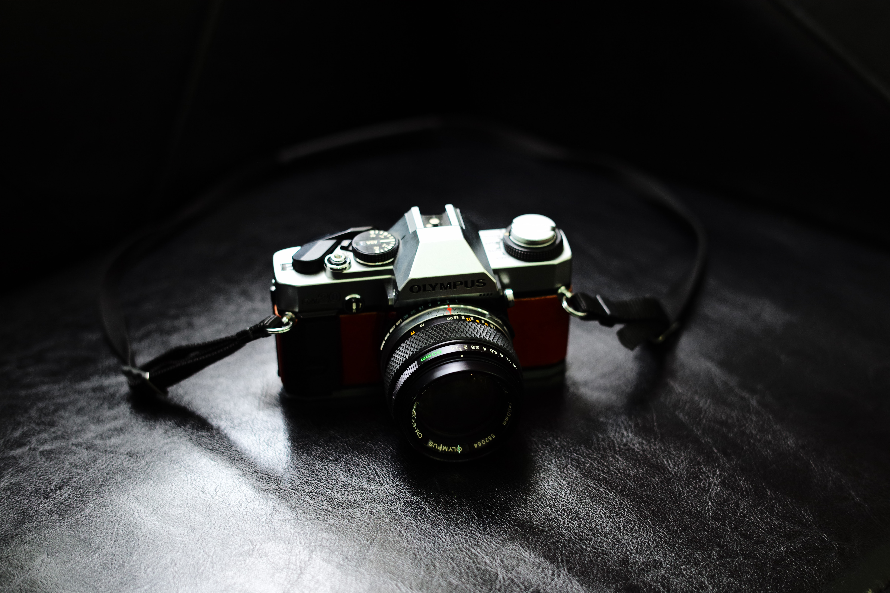

- 촬영
- CSS
- JavaScript

촬영. 촬영이라는 행위는 인간에게 한계(기본적으로 주어진 것)를 넘어서는 행위이다. 인간에게 시간을 지배하는 능력은 주어져 있지 않다. 그러나 촬영 기술의 발달로 인하여 찰나의 시간을 사진이라는 형태로 소유하는 것이 가능해졌다. 처음 사진을 본 사람들의 심정을 공감할 수 있겠는가? 그들은 사진에 찍히면 영혼을 뺏기고, 사진 속에 그 영혼이 갖힌다고 믿을 정도로 충격을 받았다. 이는 당연한 일이다. 인간에게 주어지지 않은 시간을 지배하는 능력이 생겨났기 때문이다.따라서 나는 '촬영'에 대해 생각할 때, 무엇인가 위험하고 간질간질한 느낌을 지울 수가 없다. 사람들의 욕심은 끝이 없다. 원하고 원한다. 자신의 것이 아닐수록 더욱 더 원한다. 이러한 인간의 탐욕으로 시간을 지배하는 능력의 한 조각을 도둑질한 느낌을 받기 때문에 그렇게 느끼는 걸지도 모른다.